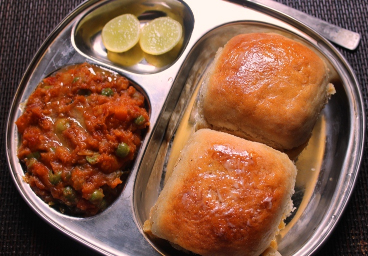

Pav Bhaji

Description
I love to eat street food dishes..The place where I live dont have that many street food shops. It does have a few portable ones and I have tried their food couple of times..They dont use best quality ingredients. They never touch expensive stuffs.
They dont even serve in fancy bowls and saucers. But I dont know how those dishes taste great than many huge restaurants.
I think its all from the flavours they add in their dishes and serving them as fresh as possible..I know that they serve dishes piping hot right from the stove..This is one of mumbais
top street food recipe. My recipe is made right from scratch,It doesnt require the store bought pav bhaji masala powder.
Ingredients
- Potato - 3 medium size peeled and cubed
- Cauliflower - 1 cup cut into big pieces
- Beetroot - 1 small peeled and cubed
- Carrot - 1 large chopped
- Onion - 1 medium size finely chopped
- Capsicum / Bell Pepper - 1 cup chopped finely
- Tomato - 4 large chopped finely
- Green Chilli - 3 chopped finely
- Ginger Garlic Paste - 1 tblspn
- Cumin Seeds / Jeerakam - 1 tsp
- Turmeric Powder / Manjal Podi - 1 tsp
- Coriander leaves / Cilantro for garnishing
- Butter - 5 tblspn
- Lemon Juice - 2 tsp
Steps
- Take potato, cauliflower, beans, beetroot and carrot in a pressure cooker and cover it with water. Pressure cook for 4 whistle, simmer for 10 mins.
Turn off the heat and let them steam go all by itself. Open the cooker and mash the veggies roughly with a masher, Set aside.
- Melt butter in a kadai and add in cumin seeds and let them sizzle.
- Now add in onions and capsicum. cook till golden brown.
- Add in green chilli and ginger garlic paste and saute for a min.
- Add in all spice powders and mix well.Add in chopped tomatoes and mix well.
- Season with salt and sugar.Cook till the tomatoes turn mushy and become saucy.
- Add in water and peas. Bring it to a boil.
- Now add in all the mashed vegetables and mix well.
- To serve pav bhaji..Heat a tblspn of butter and add a cut open pav bun and toast for 1 min till golden. Remove to a plate.
- Add a tblspn of butter in the same tawa and add some bhaji on top of it.
Cook till it is thick and bubbly. Transfer this to the plate.
- Dollop a spoonful of butter on top and add some onions too. Squeeze some lemon juice and serve.